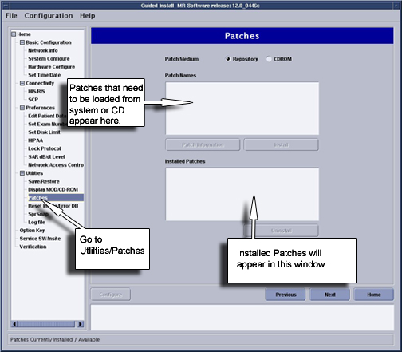
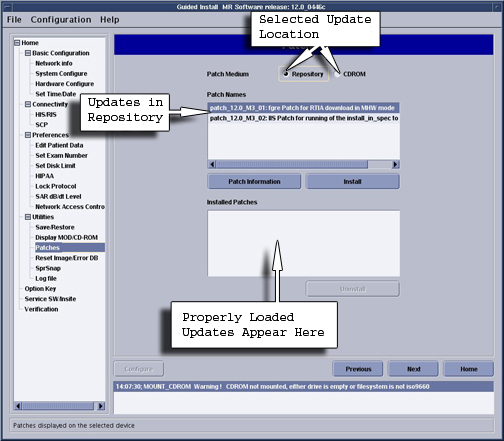
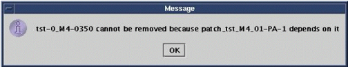
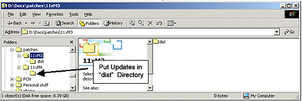
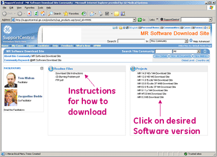
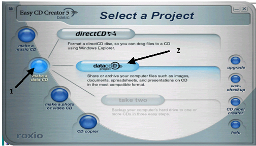
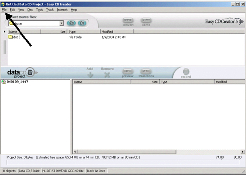
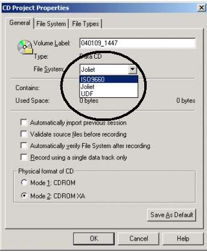
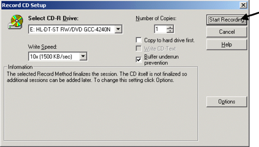
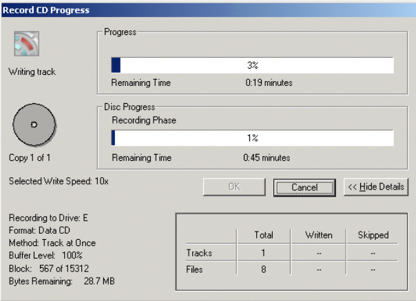

GE Exclusive Use Only
Direction 5440000, Rev# 5
Signa HDxt Service Methods
Module Version 2.0, Version Date 3/4/08
GE Exclusive Use Only |
| Required Persons | Preliminary Reqs | Procedure | Finalization |
|---|---|---|---|
| 1 | Not Applicable | 30 mins | Not Applicable |
This document consist of the following:
Update CD Creation From Downloaded Files (Old Style Laptop Using Easy CD Creator)
Update CD Creation From Downloaded Files (New style Dell D610 laptop Using Sonic RecordNow Plus)
| Last Update | 02/19/2007 |
| Condition | Reference | Effectivity |
|---|---|---|
Updates are loaded after MR_Apps and Service Software and Signa Software Is Up and Running | - | - |
Restart the computer by right clicking on mouse, select [Service Tools], then [System Restart]. When prompted to log back in, login name is root, password is operator. Updates should not be loaded with Applications software running.
Click on [Yes] to invoke Guided Install.
Click on [Patches] Tab, then click on [Patches] again in the upper left area of the GUI. See Illustration 1.
Illustration 1: Updates Tab Display

From this GUI we can perform the following tasks:
Determine Updates that have been loaded onto the system disk by selecting [Installed Patches] option
Determine Updates that are on the CD-ROM by selecting [CD-ROM] option.
Determine Updates that have been downloaded to the /usr/g/insite/data via InSite by selecting [Repository] option.
Help files can be viewed if available for Updates on the system, CD-ROM, or in the /usr/g/insite/data directory by selecting the [Patch Information]
There are 2 options for loading Updates, load from Repository or load from CDROM.
To load a Update from Repository (located in /usr/g/insite/data), select [Repository]. The list of applicable Updates that have been downloaded to the site via InSite will appear on the GUI.
To load a Update from CD-ROM, insert the Update CD into the drive on the Linux PC. Select [CD-ROM]. The list of applicable Updates that are on the CD will appear on the GUI.
Click on the applicable patch that you want to load. The Update should be highlighted. See Illustration 2
| NOTE: | You can only load one Update at a time. |
Illustration 2: Selecting and Installing Update

To verify that the Update properly loaded, view Installed Patches section. The Update, if properly loaded will now appear. Also look at the Status section of the Guided Install GUI. A message indicating Patch Load done indicates successful load.
The Update will verify proper software revision and conflict information before loading. If the software revision of the Update does not match the Applications revision, the following message will be displayed. The Update cannot be loaded.
Illustration 3: Failed Dependencies Message

If there are conflicts between Update on the system, and Updates to be loaded, the following message will be displayed.
Patch_tst_M4_01 = PA conflicts with patch_tst_M4_03-PA-1
This means that patch M4_01 (which is loaded on the system) must be deleted before you can load patch M4_03. See next section for updateremoval, Step .
Click on [Installed Updates] section of GUI
Click on the specific Update that you want to remove. The Update will be highlighted.
Click on [Uninstall]. The Update will then be removed. See Illustration 4.
Illustration 4: Removing Updates

If there is a conflict which prevents a Update from being uninstalled, the following message will appear. The conflict must be resolved by possibly removing another Update.
Illustration 5: Uninstall Error Popup

Create a directory on your laptop for Update download. IMPORTANT, the Updates must end up in directory called dist. Recommend creating a folder with the software revision, then a sub-directory called dist. See Illustration 6.
Illustration 6: Placing A Update in The Right Structure

Go online and log into GE Healthcare MR Software Download Support Central Site. Once there proceed to Projects.
Select the proper software revision that you wish to download. See Illustration 7.
Illustration 7: MR Software Download Site

Select the patches that you want to download, and select the target area that was created in step 1 where the patches are to be downloaded to. We recommend downloading all files listed under the Download Files heading that are available for that particular revision.
The download time will vary, depending on number and size of files to be downloaded.
Insert blank CD-ROM. The following menu will be displayed. If the menu does not auto-display, select Start -> Programs -> Roxio Easy CD Creator -> Project Selector
Illustration 8: Easy CD Creator Screen

Select Make a [Data CD], then [dataCD] Project
Need to change transfer method to ISO9600. Select File from upper left corner of the Easy CD Creator Screen, then select [CD Project Properties]. See Illustration 9.
Illustration 9: Moving to Change CD Format

Change the File System from Joliet to ISO9600. See Illustration 10.
Illustration 10: Selecting File System Type

Now select the “dist” directory where the updates were downloaded. Highlight the “dist” directory and select [Add] .
Once all the Updates have been added to the CD creation menu select record. See Illustration 11.
Illustration 11: Burning a Master
When the window as shown inIllustration 12 appears, select [Start Recording]. Data transfer from laptop to CD will begin.
Illustration 12: Starting the Recording

Illustration 13: Recording Status Popup

Once completed eject the disk. Continue with Update installation instructions located on the Quickplace site. The instructions may vary by software build.
Refer to the Creating a CD for Software Patchprocedure.
After the CD has been successfully created, the Updates can be loaded onto the system as described in Update Load Procedure Overview.
Do a “Good by” scan to insure proper scanner operation.